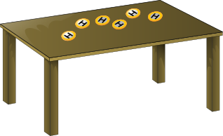
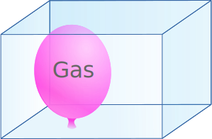
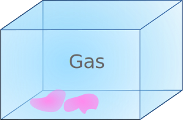
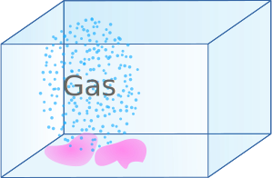
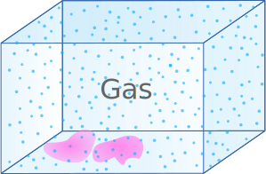
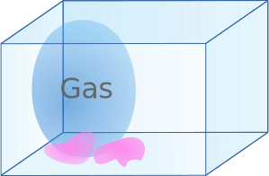

Entropy Introduction
Entropy is a measure of disorder
You walk into a room and see a table with coins on it.

You notice they are all heads up:
HHHHHH
"Whoa, that seems unlikely" you think. But nice and orderly, right?
You move the table and the vibration causes a coin to flip to tails (T):
HHHHTH
"Huh, I wonder if I can get it to flip back again?", so you shift the table a bit more and get this:
HTTHTH
Hmmm... more disorderly. You shift the table a bit more and still get random heads and tails.
To begin with they were very orderly, but now they are disorderly again and again.
We can see they are disorderly, but can we come up with a measure of how disorderly they are?
First, how many possible states can they be in?
- 1 coin can have 2 states: {H, T}
- 2 coins can have 4 states: {HH, HT, TH, TT}
- 3 coins can have 8 states: {HHH, HHT, HTH, HTT, THH, THT, TTH, TTT}
They double each time, so 6 coins can have 26 = 64 states
Each state has exactly the same chance, but let us group them by how many tails:
| Tails | States | Count of States |
|---|---|---|
| 0 | HHHHHH | 1 |
| 1 | HHHHHT HHHHTH HHHTHH HHTHHH HTHHHH THHHHH | 6 |
| 2 | HHHHTT HHHTHT HHHTTH HHTHHT HHTHTH HHTTHH HTHHHT HTHHTH HTHTHH HTTHHH THHHHT THHHTH THHTHH THTHHH TTHHHH | 15 |
| 3 | HHHTTT HHTHTT HHTTHT HHTTTH HTHHTT HTHTHT HTHTTH HTTHHT HTTHTH HTTTHH THHHTT THHTHT THHTTH THTHHT THTHTH THTTHH TTHHHT TTHHTH TTHTHH TTTHHH | 20 |
| 4 | HHTTTT HTHTTT HTTHTT HTTTHT HTTTTH THHTTT THTHTT THTTHT THTTTH TTHHTT TTHTHT TTHTTH TTTHHT TTTHTH TTTTHH | 15 |
| 5 | HTTTTT THTTTT TTHTTT TTTHTT TTTTHT TTTTTH | 6 |
| 6 | TTTTTT | 1 |
Only 1 of the 64 possibilities is HHHHHH.
A combination of H and T is much more likely.
The counts (1, 6, 15, 20, 15, 6, 1) give a rough idea of disorder, but we can do better!
It turns out that a logarithm of the number of states is perfect for disorder.
Here we use the natural logarithm "ln" to 2 decimal places:
| Tails | States | ln(States) |
|---|---|---|
| 0 | 1 |
0 |
| 1 | 6 |
1.79 |
| 2 | 15 |
2.71 |
| 3 | 20 |
3.00 |
| 4 | 15 |
2.71 |
| 5 | 6 |
1.79 |
| 6 | 1 |
0 |
And that is Entropy! We throw in a constant "k" and get:
Entropy = k ln(States)
Play with it here. Every time a random spot is chosen to be flipped. Are any lines more common? Are any totals more common?
This concept helps explain many things in the world: milk mixing in coffee, movement of heat, pollution, gas dispersing and more.
In the real world there are many more particles, and each particle has many more states, but the same idea applies.
Gas
Here is a balloon of gas in a plastic box:

The gas molecules bounce around inside the balloon in different directions at different speeds.
There are many different states the gas can be in.
By "many" we mean a very very very large number.
The balloon bursts and the gas spreads out into the box.

Now there are many more possible states:
- some of those states have the gas back to the balloon shape again (not likely!)
- other states might form the word "HI" (not likely!)
- but most of the new states are going to be well spread out in the space available.
So the new states include the old states plus many many more.
The value of ln(States) is now larger, so entropy has increased.
As a general rule entropy increases.
But let us be clear here:
Any one state (imagine we froze time) is just as likely as any other state.
But entropy is about a group or class of states.
- "All states inside the balloon"
- "All states within the whole box"
Similar to the example at the start:
- "Only 1 Head"
- "2 Heads"
- "3 Heads"
- etc...
In picture form:
|  1 State |
 1 State | |
| Any 1 state is equally likely | ||
|  Many States |
Many Many States | |
| But groups can have very different numbers of states | ||
Any single state is called a "microstate". Each are equally likely, no matter how weird they may look.
The groups are called "macrostates", and because they may contain different numbers of microstates they are not equally likely.
Entropy Increases
With just 6 coins we saw entropy naturally increase, but with some chance of getting lower entropy (HHHHHH has a 1/64 chance)
Now imagine 100 coins: the chance of all heads is less than 0.000 000 000 000 000 000 000 000 000 001, which would be freaky.
Now imagine a drop of water with over 5 x 1021 atoms (and an atom is more complex than heads or tails). The chance of randomly getting reduced entropy is so ridiculously small that we just say entropy increases.
And this is the main idea behind the Second Law of Thermodynamics.
Entropy Decreases
Ah, but we can make entropy decrease in a region, but at the expense of increasing entropy elsewhere.
Examples:
- A factory that makes neat stacks of paper. The paper is orderly but the factory creates a lot of disorder to make them.
- A new building is neat and orderly, but making it created a lot of disorder (quarries, timber mills, steel production, electricity, fuel, etc)
Physics
Entropy behaves in predictable ways.
In Physics the basic definition is:
S = kB log(Ω)
Where:
- S is entropy
- kB is Boltzmann's Constant
- Ω is the number of "Microstates"
Another important formula is:
ΔS = QT
Where:
- ΔS is the change in entropy
- Q is the flow of heat energy in or out of the system
- T is temperature
But more details are beyond this introductory page.
Footnote: Logarithm Bases
We used the natural logarithm because we love it. Other people prefer base 2 or base 10 logarithms. Any base is fine because we can convert between them using constants such as ln(2) or ln(10) like this:
- log2(15) = ln(15)/ln(2)
- log10(15) = ln(15)/ln(10)